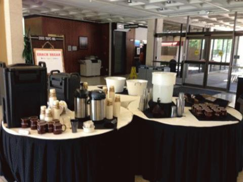
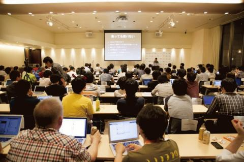

This entry is Japanese only
おはようございます。ゆーすけべーことYAPC実行委員長のわだです。 当日へ向けての準備が徐々に軌道に乗り出しました。初めてのYAPC運営。戸惑うことがあっても、僕は元気です :-)
さて今年のYAPC::Asia Tokyo 2014ではやや実験的なことにチャレンジしますので、紹介しましょう。
イベントトラック
例年通り、20分及び40分のトークを募集し、採択者のトークを参加者が聴くというスタイルを基本踏襲します。Perlだけに限らない、テクニックやノウハウ、そして「刺激」を得ることになるでしょう。それに加えて今回は「 イベントトラック 」を導入します。すると当日は
- 通常のトークセッション x 3トラックが並列で開催
- さらに並行でイベントトラックが走る
となります。このイベントトラックが開催される会場の「 イベントホール 」は唯一飲食可能な会場でコーヒーなどを振る舞うことを予定しています。僕が去年「YAPC::NA」へ参加した際に、会場に用意されていたコーヒーがキッカケで、海外のPerlハッカー達と交流する機会があったので是非叶えたいと思っています。以下はYAPC::NAでの写真です。ここまではいかずとも... 近いものを目指します！

イベントホールは基本的に開放されているのですが、そこでゲリラ的に行なわれるが「 イベントトラック 」です。ゲリラ的に行なわれることを、ここで予め告知すると「ゲリラじゃなくなるんじゃないでしょうか？」というツッコミはさておき、いくつかの企画を考え中です。
通常のトークセッションが、スピーカーから観客へ、というある程度一方通行なものに対し、イベントトラックの企画では、より登壇者と参加者が近いものになります。また、多少エンタメ要素が強くなるので、「トークを聴くのに疲れちゃったわ」という方はのんびりと参加するとよいかと思います。以下は去年のイベントホールの模様です。こんなに堅苦しくはなりませんので、あくまで会場の参考までに！

今後の予定
現在、チケット発売第1弾として
- 先行販売チケット - 2日通し券、Tシャツ付き、4,000円
- 個人スポンサーチケット - 2日通し券、特典付き、1口10,000円から
を来週、つまり、6月2日〜6日の間に開始する予定です。また、通常のトーク募集も同時期に始めます。トークしたい！という方は予めウォーミングアップをお願いします。
なお今回の個人スポンサーの特典は「 YAPC::Asia Tokyo 2014 オリジナルパーカー 」を予定しております。暑い時期ではありますが、YAPCが終われば、秋の季節に突入するので重宝するかと思います！
Date 2014.05.30 By yusukebe
(English follows Japanese)
YAPC実行委員長になりましたゆーすけべーこと和田裕介です。去年まで運営をやっていた櫛井さんと牧さんに変わり、今年のYAPC::Asia Tokyo 2014は僕が運営委員長という立場で僕とコアスタッフ数名で準備を進めています。さて、会場周りの決定や制作物などが揃ってきましたので、公式サイトがやっとオープンになります。お待たせしました！
今年のテーマ
今年のスローガンはズバリ！
There is more than one way to enjoy it!
です。Perlでも謳っている「TMTOWTDI」にかけてました :-)
僕がここ数年間一般参加者としてYAPCに行ってみて感じたことをそのまま言葉にしました。YAPCの会場では憧れのハッカーのトークを聞くことだけではなく、会場の周りでラフなコミュニケーションを取ったり、懇親会や後の打ち上げで騒いだり、技術について熱く語りあう場面をたくさん見ます。その場でコードを書き出す人も中にはいます。また、技術者同士の出会いの場であったりもしますね。YAPCというイベントは「Perlの話」だけに限らず「技術者のための」楽しみ方がたくさんあり、今年はそれをより促進させるような仕掛けや環境づくりに励みたいと思います。
YAPC当日のコンテンツについて
今年も例年どおり「ガチな」トークを募集する予定です。そして、今回はこうした通常のトークトラックの他に「イベントトラック」と称する小さくてかつ参加者と登壇者の距離が近い「ぷちイベント」をいくつか行うものを企画中です。詳細は追って連絡しますので、お楽しみに！
イベントお知らせメール
新たにお知らせ等があれば本サイトの記事でももちろん紹介しますが、それとは別に
- チケット販売情報
- スピーカー向け情報
- 会場案内
- イベントトラックについて
など随時メールでお知らせする「イベントお知らせメール」を用意しましたので是非ご活用ください。このサイトのトップページにあるフォームからメールアドレスを入力して登録、確認メールの記載にそえば完了です。なお、確認メールは迷惑メールフォルダに入っている可能性もありますのでご確認ください。
不明な点などありましたら @yusukebe 宛か、ハッシュタグ #yapcasia をつけてTweetしていただければと思います。
また引き続き、スポンサードをしていただける企業様を募集してます。ご興味のある方はスポンサーページをご覧ください！
では、またねー！
====
Hi, this is Yusuke Wada: I will be overseeing this year's YAPC::Asia Tokyo. After Daisuke Maki (aka lestrrat) and Yusuke Kushii's retirement from the event last year, I have stepped up to keep the show going along with a few core staffers. After much preparation, we're finally ready to open the official website. Thanks for waiting!
This Year's Theme
This year, our theme is:
There is more than one way to enjoy it!
Yes, it's a pun on Perl's slogan: "TMTOWTDI"
The theme reflects how I have been feeling as a YAPC::Asia Tokyo participant for the last few years. At YAPC::Asia, not only can you meet and listen to all the cool hackers, but the communication that goes on at around the venue and at the socials gives us a great opportunity to talk about tech. There are always people who receives an epiphany during the event and start writing code t the venue. It's also a great place to renew old friendships and meet new ones.
YAPC gives us more than just the opportunity to talk about Perl, but it's a place for all engineers to have fun in all sorts of ways. This year, we plan to do everything possible to help you all find the right way for you to enjoy this event.
Tracks
As every year, we plan to ask for "serious" talks, but we'll also have a track ("event track") dedicated for small events to help participants socialize. More details will be available soon. Stay tuned!
Event Notices (Mailing List)
While we will be posting updates and notices on this site, there will be a separate mailing list to send you more information like:
- Ticket sales
- Notices for speakers
- Information about the venue
- Information about the Event Track
which you can join from the form available on the main page. Please note, however, that this mail will be available JAPANESE ONLY.
If you have anyquestions, please contact @yusukebe on Twitter, or tweet using the hashtag #yapcasia
We're also still looking for sponsors. If you or your employer is interested, please checkout the Sponsors page!
See you soon!
Date 2014.05.12 By yusukebe
![Aug. 28, 29, 30 at KEIO Univ. Hiyoshi Campus [There Is More Than One Way To Enjoy It!]](../../static/images/header_date_l.png)
{kind=link}
{kind=link}